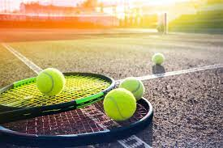
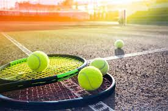
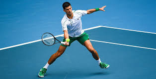

Czym jest tenis?
Tenis to sport rakiety, w którym zawodnicy rywalizują ze sobą na kortach, starając się zdobyć więcej punktów niż przeciwnik.
Tenis to sport rakiety, w którym zawodnicy rywalizują ze sobą na kortach, starając się zdobyć więcej punktów niż przeciwnik.
Wśród najlepszych zawodników tenisa światowego znajdują się tacy gracze jak Novak Djokovic, Rafael Nadal, Roger Federer i Carlos Alcaraz.
Turnieje wielkoszlemowe, takie jak Australian Open, French Open, Wimbledon i US Open, to najważniejsze wydarzenia tenisowe, gdzie ci wybitni zawodnicy rywalizują o prestiżowe tytuły.
Sezon tenisowy obejmuje wiele turniejów na różnych nawierzchniach, dostarczając kibicom emocjonujących chwil i niezapomnianych widowisk.
Przeczytaj więcej o tenisie.